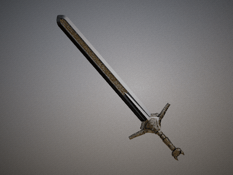
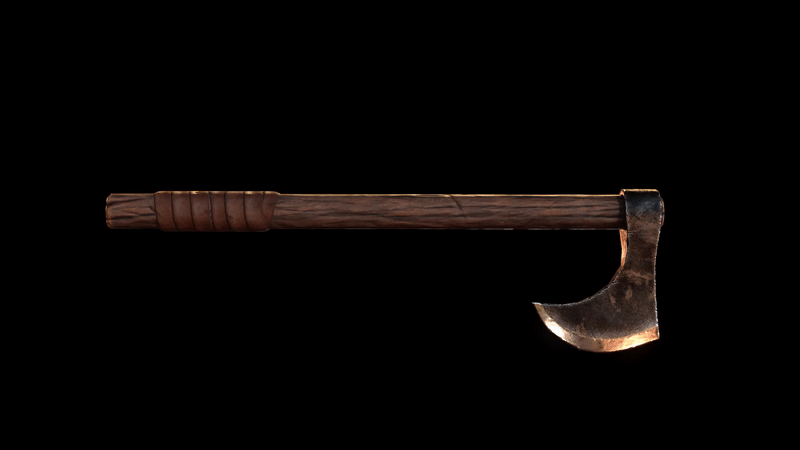
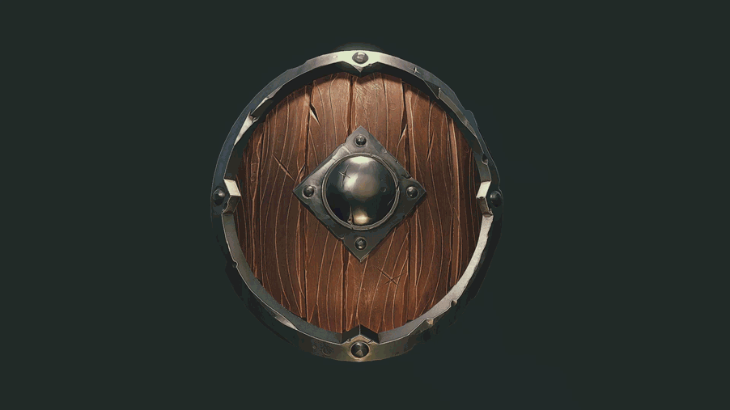
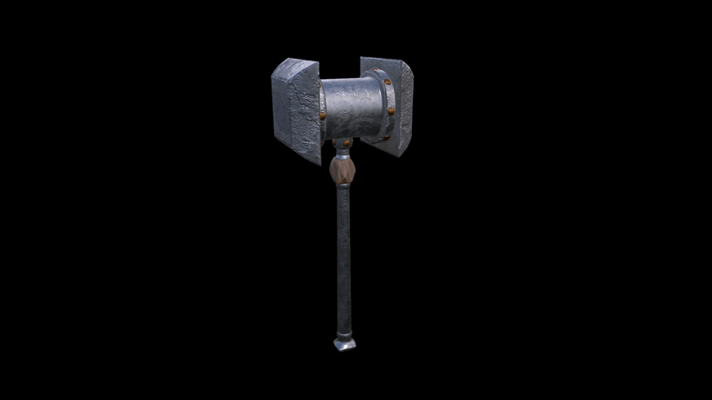
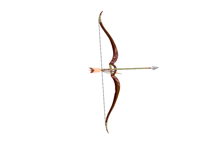
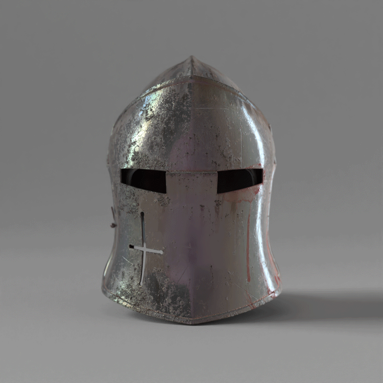

When going on an Epic Quest, not only is the party necessary, but it is important to pick the tools and equipment that you will be needing on your Epic Quest. Below you will see the primary tools that we recommend for use on Epic Quests, though there are many more to be found. Choose your equipment wisely, for it can also weigh you down.
But now, onward!
| Sword  Made of sharpened steel, a sword at your side is a mighty weapon when used rightly. |
Axe  An axe is a very versatile tool. With the ability to cut down foes as good as it cuts down trees, an axe is a tool as well as a weapon. |
Shield  A mobile fort, from behind which you can strike unfearing for yourself. |
Hammer  With crushing force that more than compensates for its unweildiness, the hammer is a prime tool for not only defeating foes, but making more tools to defeat them as well. |
Bow  With steel at the tip, and with the speed of an eagle, an arrow this bow shoots forth, with swiftness unmatched. |
Helmet  A shield for the head, and a valuable one. One stroke to and you are down, but with a helmet on your head, you'll be able to get up again. |